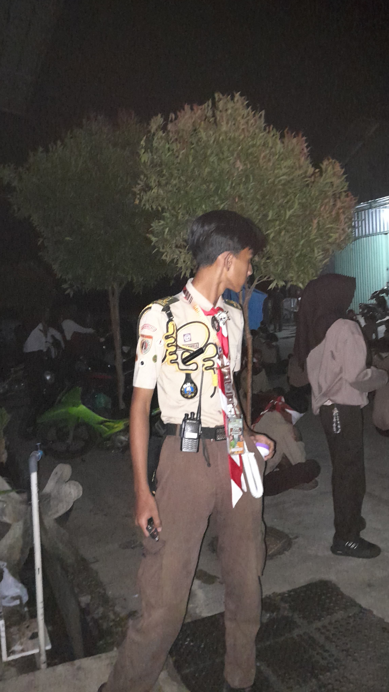

Argantara Ramadhani Developer
Ramadhani Wahyu Alif
RAMADHANI WAHYU ALIF
diatas adalah nama lengkap saya.
SISWA TJKT
SMK PANCA BHAKTI RAKIT
ALAMAT
Gemilang, Sambong, RT3/RW5, Punggelan, Banjarnegara.
CERITA RANDOM
Halo! Namaku Ramadhani Wahyu Alif, siswa kelas 12 TKJ 1 yang sedang menjelajahi dunia jaringan, router, dan semua hal rumit yang bikin pusing tapi seru. Aku mulai tertarik dengan dunia TKJ karena penasaran, kok bisa sih satu kabel bisa menghubungkan dunia? Eh, ternyata bukan cuma kabel, tapi konfigurasi dan otak-atik router juga jadi bagian penting. Dan jujur... aku suka banget yang kayak gitu.
Di luar itu, aku juga punya hobi belajar coding sedikit demi sedikit, kayak ngumpulin koin di game, pelan-pelan tapi pasti. Kadang kalau lagi suntuk ngoding, aku istirahat sambil menggambar wajah orang-orang yang menurutku berkesan, dalam gaya semi-realis. Buatku, itu cara lain mengabadikan momen dan orang yang pernah hadir di hidupku.
Oh iya, aku juga aktif di organisasi Pramuka sejak MI, SMP, sampai sekarang di SMK. Banyak nilai disiplin dan tanggung jawab yang aku bawa dari sana ke kehidupan sehari-hari, termasuk pas harus begadang konfigurasi router yang tiba-tiba error 😅
Kalau ditanya pengalaman lucu selama sekolah, pasti ada aja! Apalagi kalau udah ngumpul sama teman-teman sekelas yang tingkahnya random banget. Ada aja yang bisa bikin ketawa, mulai dari iseng di kelas sampai drama rebutan kabel LAN.
Terus, soal cita-cita... jujur aja aku masih hilang arah. Tapi mungkin itu wajar. Aku percaya, selama terus belajar dan eksplorasi hal-hal yang aku suka, arah itu bakal muncul sendiri. Untuk sekarang, aku nikmati aja prosesnya.